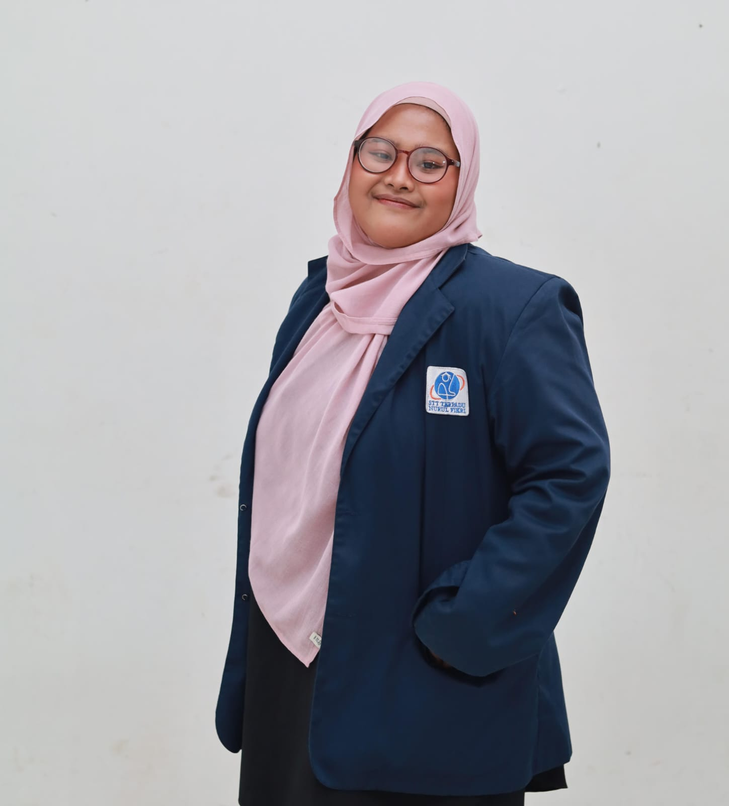

| Nama | : Rumaisha |
| NIM / NIPM | : 0110224087 |
| Tempat, Tanggal Lahir | : Jakarta, 15 Oktober |
| Jenis Kelamin | : Perempuan |
| Alamat | : Jagakarsa, Jakarta Selatan |
| : 0110224087@student.nurulfikri.ac.id |
Nama Kampus: Sekolah Tinggi Teknologi Terpadu Nurul Fikri
Jurusan: Teknik Informatika dengan Peminatan Cyber Security
Semester: 5
Tahun Ajaran: 2026/2027